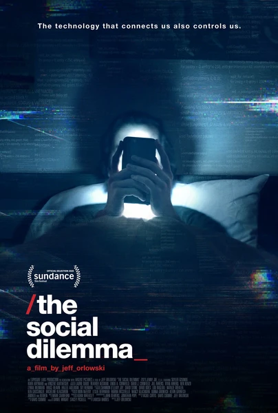

Документальный · 2020 · Документальный
Консультанты крупнейших соцсетей объясняют, как алгоритмы захватывают внимание и радикализируют нас. Хит Netflix об уязвимости человеческой психики.
Former tech insiders explain how algorithms capture attention and radicalize us. Netflix' hit about the vulnerability of the human psyche.
← Вернуться в каталог IT Movies